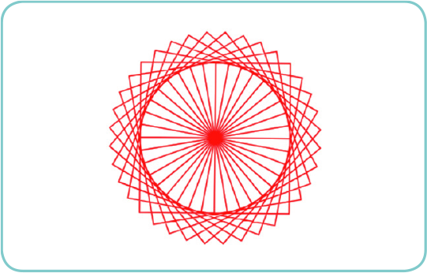
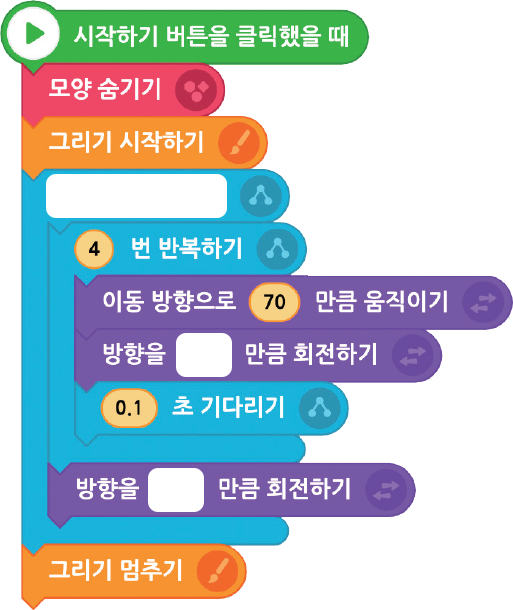

반복 속의 반복 구조 | 사각형 그리기 프로그램을 활용하여 꽃 모양의 그림을 그리는 프로그램을 작성해 보자.
1연필 모양이 보이지 않게 숨긴다.
2 3~4를 36번 반복한다.
3사각형을 그린다.
4방향을 10도만큼 회전한다.
실행 화면

- 오브젝트
-
연필(1)
아래 블록을 참고하여 프로그램을 작성해 보자.
연필(1)

화면의 크기를 좌우로 조절하면 블록을 크게 볼 수 있어요.
이전
다음